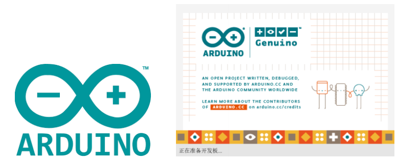

Arduino

Arduino是什么？
Arduino 是一款简单易用、便于上手的开源电子原型平台，包含硬件部分（各种符合 Arduino 规范的开发板）和软件部分（ Arduino IDE 和相关的开发包）。 硬件部分（或称开发板）由微控制器（MCU）、闪存（Flash）以及一组通用输入/输出接口（GPIO）等构成，你可以将它理解为是一块微型电脑主板。 软件部分则主要由PC端的 Arduino IDE 以及相关的板级支持包（BSP）和丰富的第三方函数库组成。使用者可以借由 Arduino IDE 轻松地下载你所持有的开发板相关的BSP和需要的函数库，用于编写你的程序。
MyCobotBasic库可以做什么？
MyCobotBasic库是我们公司开发的一款开源机器人控制库，需要使用我们公司开发的机器人方可使用。使用该库，您可以通过蓝牙、WiFi、串口等方式控制我们的机器人，同时支持外接传感器、IIC通信、LED灯等功能。您可以根据自己的需求DIY不同的应用场景，也可以参考我们提供的MiniRobot示例代码或者角度、坐标、夹爪等控制案例。MiniRobot示例代码中包含蓝牙、WiFi、拖动示教、距离传感器等控制相关的内容。
适用设备：
- myCobot 280
- myCobot 280 M5
- myCobot 280 for Arduino
- myCobot 320
- myCobot 320 M5
- myCobot 320 M5
- myPalletizer 260
- myPalletizer 260 M5
- myPalletizer 260 M5
- mechArm 270
- mechArm 270 M5
- mechArm 270 M5
使用前提：
- M5 系列版本， 底部M5Stack-basic烧录 miniRobot，选择 Transponder 功能，末端 ATOM 烧录最新版的 atomMain (出厂默认已烧录)
Arduino开发使用引导
您可以根据以下指引来使用 Arduino对我们的机械臂进行开发 1.环境搭建
2.简单使用
3.API说明